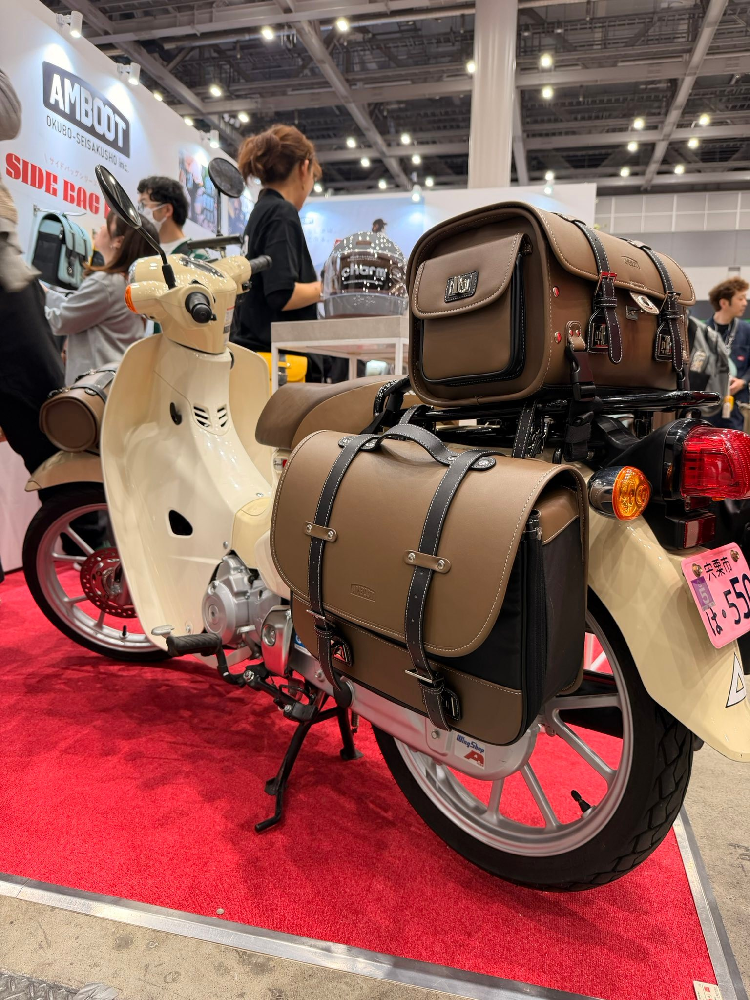
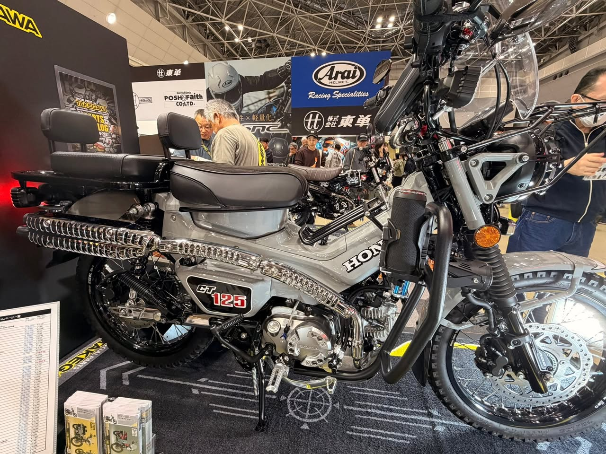
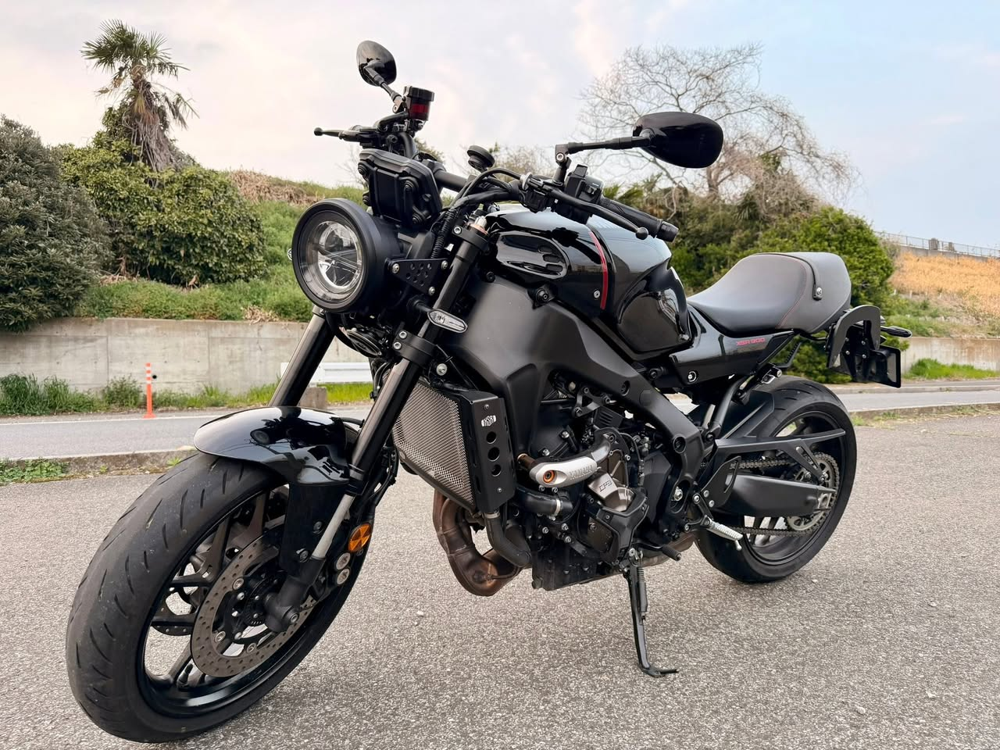

東京ビッグサイトで開催された東京モーターサイクルショー2026へ。会場で特に刺さったものを記録しておく。
バイクショーでまず気になったのがバッグだった

バイクが何百台も並ぶ会場に来て、最初に足が止まったのがAMBOOTのサイドバッグだった。バイクではなくバッグ。
カブとの相性がとにかく良く、積載力がありつつ見た目もちゃんとしゃれている。革のような質感とシンプルなデザインがカブの雰囲気に合っていた。これを見てカブが欲しくなった。バッグ目当てで。
CBR400R FOUR

ホンダのブースで展示されていたCBR400R FOURも気になった。直列4気筒・400ccのフルカウルスポーツが国内向けに登場するのは、1990年のCBR400RR以来36年ぶりとのこと。実物は想像より迫力があった。
CT125カスタム

CT125のカスタム展示もあった。フロントキャリア、大型のリアラック、ブロックタイヤ。完全にアドベンチャー仕様に仕立てられていて、原付二種の守備範囲の広さを改めて感じた。
結局、自分のバイクが一番いい

会場ではいろんなバイクに目移りしたが、駐車場に戻って自分のXSR900を見たとき、「やっぱりこれでいいな」と思った。欲しいものを見て回るのは楽しいが、最終的にそこに落ち着く。毎年同じことを繰り返している気がする。